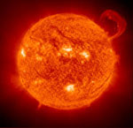
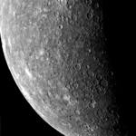
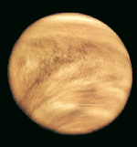
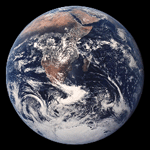
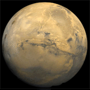
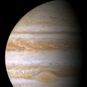

Słońce

Średnica (km): 1.392.000
Masa (Ziemia = 1): 332.950
Gęstość (g/cm³, Woda = 1): 1,41
Okres obrotu: ok. 27 dni
Przyśpieszenie grawitacyjne (m/²): 273
Szybkość ucieczki (km/s): 620
Słońce jest naszą najbliższą gwiazdą, która jest centrum naszego Układu i wokół której planety krążą po eliptycznych orbitach. Maksymalna temperatura na Słońcu osiąga +6000°C, minimalna +3870°C, a temperatura jądra wynosi aż +15mln°C. Słońce powstało około 4,6 miliarda lat temu z wirującej chmury gazów i pyłów. We wnętrzu Słońca cały czas zachodzą reakcje jądrowe, których głównym składnikiem jest wodór. Słońce składa się z czterech warstw: korony słonecznej (którą można oglądać podczas zaćmienia Słońca), chromosfery (w której zachodzą erupcje), fonosfery (będącą właściwą powierzchnią Słońca) i jądra (w którym powstaje światło i ciepło).
Słońce nie spala się tylko produkuje energię cieplną i świetlną. Kiedy dwa atomy wodoru łączą się ze sobą tworząc hel, powstaje mała część materii, która przesuwa się w kierunku powierzchni Słońca i jest tam uwalniana w postaci światła i ciepła. W ten sposób Słońce traci część swojej masy. Słońce ma czasami ciemne plamy na swej powierzchni zwane plamami słonecznymi. Pojawiają się one zwykle w skupiskach i mogą trwać od kilku godzin do kilku miesięcy. Przy kilkudniowej obserwacji widoczne jest przesuwanie się plam na tarczy słonecznej, a dzieje się tak, ponieważ Słońce obraca się wokół swej osi, co trwa miesiąc.
Merkury

Odległość od Słońca w mln km: 59,9
Okres obiegu wokół Słońca: 87,969 dnia
Okres rotacji: 58,65 dni
Średnica (km): 4878
Masa (Ziemia = 1): 0,056
Objętość (Ziemia = 1): 0,05
Gęstość (g/cm³): 5,43
Prędkość ruchu po orbicie (km/s): 47,4
Liczba znanych księżyców: 0
Merkury jest pierwszą i najmniejszą planetą naszego Układu. Ciężko zobaczyć go z Ziemi, ponieważ zawsze pojawia się blisko Słońca. Merkury jest pozbawiony atmosfery. Płaszcz pod skorupą składa się ze stopionych skał, a w środku planety znajduje się jądro żelazne. Merkury krąży wokół Słońca szybko, jednak wokół swojej osi wolno, co sprawia, że wschód Słońca następuje na nim co 176 dni. Jest on jednym z najgorętszych i jednocześnie najzimniejszych planet Układu Słonecznego. Maksymalna temperatura na Merkurym wynosi +427°C, a minimalna -212°C.
Merkury ma wiele kraterów, występują na nim góry a także kilka płaskich obszarów. Największy krater o nazwie Caloris Planitia ma średnicę 1300 km. Sonda kosmiczna "Mariner 10" zbliżyła się do tej planety po przebyciu prawie 170 milionów kilometrów, a jej podróż trwała 146 dni. "Mariner 10" przeleciał obok Merkurego trzy razy fotografując go. Odkryto wtedy, że jego powierzchnię przecinają wielkie, strome skarpy o wysokości ponad 3 km, które przecinają ściany kraterów i ciągną się na przestrzeni setek kilometrów. Około 14 razy w każdym stuleciu Merkury przesuwa się dokładnie między Słońcem a Ziemią. Astronomowie nazywają to przejściem Merkurego przez tarczę słoneczną. Planeta ta jest wtedy widoczna jako mała plamka przesuwająca się ze wschodu na zachód przez tarczę Słońca.
Wenus

Odległość od Słońca w mln km: 108,2
Okres obiegu wokół Słońca: 224,7 doby
Okres rotacji: 243 doby
Średnica (km): 12104
Masa (Ziemia = 1): 0,815
Objętość (Ziemia = 1): 0,88
Gęstość (g/cm³): 5,24
Prędkość ruchu po orbicie (km/s): 35,0
Liczba znanych księżyców: 0
Wenus jest drugą planetą od Słońca i jest ona otoczona obłokami trujących gazów. Jest bardzo jasna ponieważ jej gęste chmury bardzo dobrze odbijają światło. Maksymalna temperatura na Wenus dochodzi do +482°C. Czas obrotu Wenus wokół osi jest najdłuższy w Układzie Słonecznym i wynosi aż 243 doby - mniej niż na okrążenie Słońca, przez co dzień na Wenus jest dłuższy niż rok. Planeta ta wiruje w przeciwną stroną niż porusza się po swojej orbicie, jest to tzw. "obrót wsteczny". Pierwsza sonda, jaka wylądowała na Wenus, po około godzinie została zniszczona przez jej wysoką temperaturę i ciśnienie. W 1978 r. amerykańska sonda kosmiczna "Pioneer - Venus" stała się sztucznym satelitą tej planety. Dzięki niej odkryto na jej powierzchni rozległe płaskie równiny z kraterami, dolinami oraz pasmami górskimi, a także wulkany.
Ziemia

Odległość od Słońca w mln km: 149,6
Okres obiegu wokół Słońca: 365 dni 6h
Okres rotacji: 23 h 56 min
Średnica (km): 12752
Masa (Ziemia = 1): 1,000
Objętość (Ziemia = 1): 1,00
Gęstość (g/cm³): 5,52
Prędkość ruchu po orbicie (km/s): 29,8
Liczba znanych księżyców: 1
Ziemia jest trzecią planetą od Słońca i jedyną, na której istnieje życie (bynajmniej dotychczas nie udowodniono go na innych planetach naszego Układu Słonecznego). Uważa się, że powstała ona około 4,6 miliarda lat temu, a jej temperatura wynosiła wtedy 4000°C. Wyjątkowość Ziemi polega na tym, że występuje na niej woda i zawierająca tlen atmosfera. W grudniu Ziemia znajduje się nieco bliżej Słońca, a w czerwcu jest najbardziej od niego oddalona. Oś Ziemi jest nachylona w stosunku do Słońca, dzięki czemu mamy pory roku. Obroty Ziemi wokół własnej osi powodują zjawiska dnia i nocy.
Mars

Odległość od Słońca w mln km: 227,9
Okres obiegu wokół Słońca: 686,738 dnia
Okres rotacji: 24 h 37 min
Średnica (km): 6788
Masa (Ziemia = 1): 0,107
Objętość (Ziemia = 1): 0,15
Gęstość (g/cm³): 3,04
Prędkość ruchu po orbicie (km/s): 24,1
Liczba znanych księżyców: 2
Mars jest widoczny na niebie jako czerwony, podobny do gwiazdy punkt. Jest on skalistą planetą, którą pokrywają czerwone pustynie, stąd popularna nazwa - Czerwona Planeta. Atmosfera składa się w większości z dwutlenku węgla, co uniemożliwia oddychanie. Występują tam potężne burze pyłowe, jest tam niezwykle zimno, a powierzchnia planety pokryta jest okruchami skał. Maksymalna temperatura na Marsie dochodzi do +27°C, a minimalna -126°C. Powierzchnia Czerwonej Planety jest urozmaicona - tworzą je kratery, góry, doliny i wulkany. 2 księżyce Marsa są prawdopodobnie fragmentami planetoid, a są to Phobos i Deimos.
Jowisz

Odległość od Słońca w mln km: 778,3
Okres obiegu wokół Słońca: 11 lat 315 dni
Okres rotacji: 9,8 godzin
Średnica (km): 142800
Masa (Ziemia = 1): 317,9
Objętość (Ziemia = 1): 1316
Gęstość (g/cm³): 1,32
Prędkość ruchu po orbicie (km/s): 13,1
Liczba znanych księżyców: 63
Jowisz wybrzusza się na równiku i spłaszcza na biegunach z powodu dużych wirowań. Wiatry na nim osiągają prędkość do 500 km/h. Szybki ruch wirowy i ciepło z wnętrza planety powodują powstanie silnych wiatrów, dzielących atmosferę na równoleżnikowe pasy opadających lub wznoszących się gazów. Na tarczy Jowisza widać też cyklon o średnicy dwukrotnie większej od Ziemi, zwany Wielką Czerwoną Plamą. Ten huragan szaleje na Jowiszu od co najmniej 300 lat. Na Jowiszu występuje wodór i hel, z których zbudowane są gwiazdy. Jowisz jest pierwszą z czterech wielkich planet - gazowych gigantów i jednocześnie największą planetą Układu Słonecznego. Jest on gazowa kulą, choć posiada prawdopodobnie jądro z płynnych skał. Obłoki na Jowiszu tworzą jedną warstwę, jednak jej skład nie jest jeszcze zidentyfikowany.